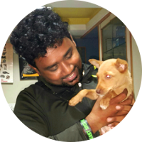

ABOUT US
About founder
Praveen Kumar L also affectionately called Rider Praveen, is an ex-gym instructor who gave up his job, his means of livelihood, all his and his family’s assets and savings to start We Save Animals (WSA) Welfare Trust. From paralysed, blind, old-age animals to accident cases, cruelty cases and terminally ill animals - he takes them all in, giving them happiness, food and a home in his shelter.
How it started
It started for Praveen in 2013, when he rescued a kitten with a spinal injury. He nursed it at home, but it passed away after a week, leaving Praveen to wonder what he could do to help numerous animals like this, that suffer in silence. So he started by rescuing injured animals, and keeping them at home. Soon, as the number of rescues increased, he started looking for temporary shelters to house them. Eventually, the news of his rescue got around and he started attending to approximately 4-5 cases in a day were People Use to tag him in social media Like Facebook etc. He took the help of Dr. Girish from Blue Cross and Dr. Lohith frm Maruthi pet clinic and started an account in their respective clinics, so that injured animals could be attended to, without a delay due to the finances. So as the number of rescues went up, so did the bill amount in the clinics. But that did not deter Praveen.
The word spread, and Praveen, who was initially contacted for rescues only around South Bangalore, started getting calls for help for cases in Mysore, Mandya, Chikmagalur Hosur etc. To manage things better, Praveen started a WhatsApp group With Just 6 People And started attending To this cases full-time. He had no option but to give up his job, financial help was low, but with his family standing behind him, praveen kept doing whatever he could for the animals.
What our Volunteers says
Tejaswini-

I have been closely associated with WSA for about two years now and I have got to see Praveen's passion and dedication for the voiceless first hand. No matter the time of the day or place, if he can help an animal or a human in distress, he will do it. There is absolutely no second thoughts or doubts about that! I have seen him nurse & nurture back to health, many fatally injured and diseased animals upon whom even the vets had given up on and had suggested euthanasia. Today these animals are a living testimony to how unflinching care and compassion can make miracles happen and Praveen has made a lot of such miracles happen at his shelter. It gives me a great sense of satisfaction to be associated with WSA. A visit to this shelter puts a big smile on my heart, the very sight of animals who seem to be leading a "happily ever after" lives came here when they were battling for their very existence! I thank Praveen for this noble cause he has taken up, something for which he has made many unimaginable sacrifices in his own life. Its a service not just to the animals in need but for humanity.
Tharinisiri-

I have visited WSA shelter with my friends and family every year. This shelter is a temple for many dogs who are hurt and can't be on the streets. I feel WSA shelter is not just any shelter. Unlike others where the animals are caged, here, they roam freely and happily. Praveen is doing a good job keeping them free. All the animals enjoy their freedom with good, healthy food and a clean environment. The staff is very helpful too. Praveen is doing a really good job. He is a Godfather for the animals.
HOURS OF OPERATION
Sy.No. 18/2, K. Chudahalli, Somanahalli Post,
Near Guhantara Resort & KMS Farm,
Uttarahalli Hobli, Kanakapura Main Road,
Bangalore - 560 082.
MONDAY - FRIDAY
10:00AM - 05:00PM
ADDRESS
Sy.No. 18/2, K. Chudahalli, Somanahalli Post,
Near Guhantara Resort & KMS Farm,
Uttarahalli Hobli,Kanakapura Main Road,
Bangalore - 560 082
EMAIL - Wsatrustindia@Gmail.Com
RESCUE LINE - +91-9632300046
Follow Us